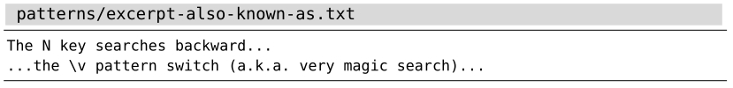
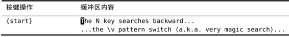
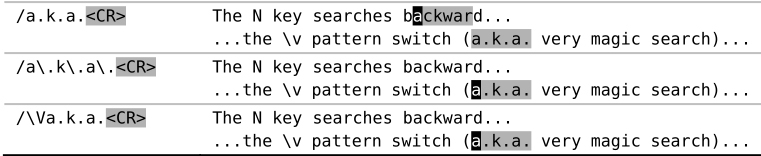

）。正如我们将在技巧78所看到的那样，这样做未免过于简化了，但却符合本例的目的。
）。正如我们将在技巧78所看到的那样，这样做未免过于简化了，但却符合本例的目的。技巧74按原义查找文本时，使用 \V原义开关
在正则表达式中使用的特殊字符，在按模式查找时用起来很顺手，但如果我们想按原义查找文本时，它们就变成了阻碍。使用very nomagic原义开关，可以消除附加在 .、*以及?等大多数字符上的特殊含义。
来看一下这段文本：

现在假设我们想通过查找“a.k.a.”（此缩写表示also known as）的方式将光标移到该处。针对这种情况，第一反应就是执行以下这条查找命令：
➾/a.k.a.
但当我们按下回车键时，会发现此模式所匹配的内容比我们预想得要多。这是因为，符号“.”具有特殊含义。它匹配任意字符，而单词“backward”的部分内容又恰好可以匹配该模式。下表展示了查找的结果。


我们在本例中遇到的麻烦还不算大，因为只需按一下n键，我们就可以跳到下一处匹配——真正的目标。但在有些情况下，如果某个匹配被误判为正确，可能会有潜在的风险。想象一下，如果我们还没意识到查找模式太宽泛了，就接着运行了substitute命令，例如，:%s//also␣known␣as/g（正如在技巧90中所讨论的那样，若将:substitute命令的查找域留空，Vim将使用上一次的查找模式），会导致某些意想不到的错误发生。
我们可以用转义的方法消除 . 字符的特殊含义。以下模式不会匹配单词backward中的一部分，但仍然会匹配“a.k.a”：
➾/a\.k\.a\.
或者，我们可以使用原义开关\V，激活very nomagic搜索模式：
➾/ \Va.k.a.
正如Vim帮助文档所述，“使用 "\V"会使得其后的模式中只有反斜杠有特殊的意义”（参见:h/\V）。正如我们将在技巧78所看到的那样，这样做未免过于简化了，但却符合本例的目的。
在very nomagic搜索模式下创建正则表达式也不是不可能，不过会很别扭，因为我们必须为每个符号转义。作为通用法则，如果你想按正则表达式查找，就用模式开关\v，而如果你想按原义查找文本，就用原义开关\V。